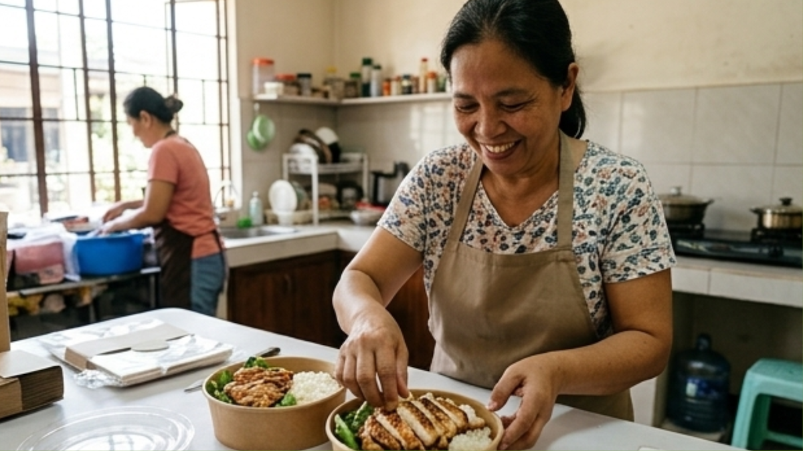

Kitchen Wheel was born from a simple feeling—missing home-cooked meals. For students living in dorms or condominiums, cooking isn’t always an option, and everyday choices often come down to fast food or expensive takeout.
We created Kitchen Wheel to bring back that sense of comfort through affordable, diet-based meal plans delivered straight to your doorstep. Every dish is thoughtfully prepared to nourish not just your body, but also that feeling of being cared for.
We work with women from local cooperatives and community organizations, giving them opportunities to earn and share their home-cooked recipes with more people.
Their experience, care, and dedication turn every meal into something more meaningful. By supporting Kitchen Wheel, you’re not just choosing convenience—you’re helping create livelihoods and celebrating the women who make every meal feel like home.